Danmaku Studio quick guide and manual
For v2.5 preview (2026-11-16). Part 1 is the quick guide, part 2 the full manual. Download from GitHub Releases. Switch the program to English with the EN button at the top right.🧭 I have a problem
Part 1: Quick guide
If you only want the essentials, this part is enough. Part 2 explains every setting with screenshots.Tips
- First time: pick a video → pick danmaku → set the output → press
● Render now. The defaults work. - Before a long render, press
✂ Test clipto render 10 seconds and check the result. - Few danmaku, all at the top → raise
Line spacing %(150–200) or set the distribution toSpread evenly. - Too many, piled up → turn on
Anti-overlaporAuto-shrink, or set a limit on the Filters page. - Want to keep every danmaku → Filters page →
★ Keep all danmaku. - Low-resolution video →
Upscale2 makes the text much sharper. - No danmaku file →
⬇ Downloadand paste a BV, ac, sn or sm number. - 🔺 Every setting has an
ⓘ; hover it for an explanation.
Before you start
- Install Python, FFmpeg and Playwright first, or the program won't run!
- Commands:
pip install playwright,playwright install chromium,winget install -e --id Gyan.FFmpeg - NVENC on a GTX 10 series card (e.g. 1050): driver 570–580 and an FFmpeg release of 8.0 or older, not the latest development build.
- With an ASS subtitle file, fonts and sizes come from the file and all style pages are locked; edit it in Aegisub.
- Only the page for the loaded site can be changed; the others turn grey.
- Never share SESSDATA, user_session or your Ani Gamer cookie with anyone or any other site.
- Ani Gamer files have no send dates, so Filters → cutoff doesn't apply to them.
- Full-history danmaku (tens of thousands) render slowly and keep the CPU busy. That's normal.
- Niconico download and browser login are still being tested; post the log on GitHub if they fail.
Shortcuts
- Live preview player (browser)
- Space play / pause (or click the video)
- ← → back / forward 5 s
- [ ] change speed
- D danmaku on/off H show/hide count and FPS F fullscreen (or double-click)
- ASS preview (ffplay): Space pause ← → 5 s ↑ ↓ 1 min 9 0 volume M mute S frame step F fullscreen
- Program window: Enter in the download URL box starts the download; in dialogs Enter presses the main button and Esc closes.
- This page: / search ↑ ↓ pick a result Enter go Esc clear
More things to do
- Merge danmaku files: Extra danmaku → Add…; files of the same kind are merged and duplicates removed.
- Batch rendering: Toolbox → Scheduler; set cores and batch per task, press
Check, thenStart. - Start later, shut down when done: Start at / When all done on the scheduler page.
- Convert formats: Toolbox → Convert between XML, JSON and ASS, or merge several files.
- bilibili history: choose Full history on the download page; set a date range and a cooldown per day. Needs a login.
- Older Niconico comments: the multiplier on the download page. Needs a Niconico login.
- No more copying cookies: press
🌐 Log innext to the field and log in in the browser that opens. - Interrupted? With
Resume interrupted renderson, render again with the same settings and it continues. - Several setups: save and apply them with Presets in the title bar.
Components
- Programs
- ☑ danmaku_studio.py <2.5> — the program, tkinter UI
- ☑ Python <3.9+> — runtime
- ☑ FFmpeg / ffprobe / ffplay <required> — encoding, video info, ASS preview
- ☑ Playwright + Chromium <required> — frame capture and the login browser; falls back to Chrome / Edge
- Built-in engines
- ☑ libass <in FFmpeg> — fast rendering of normal danmaku
- ☑ Layout engine <built in> — anti-overlap, line spacing, auto-shrink
- ☑ as3-danmaku <MIT> — bilibili code danmaku, mode 8 (formerly Flash)
- ☑ bas.js <downloaded on first use> — bilibili BAS danmaku, mode 9
- ☑ niconicomments <MIT> — Niconico layout and comment art (CA)
- Danmaku sources
- ☑ bilibili <XML, seg.so, BAS packs> — normal, advanced, code and BAS danmaku
- ☑ AcFun <JSON, old and new> — uses the bilibili page
- ☑ Ani Gamer (Bahamut) <XML, JSON> — up to about 3001 per episode
- ☑ Niconico <XML, JSON> — official comment counts, CA
- ☑ ASS subtitles <.ass> — rendered as written
- Output
- ☑ Burned-in video <MP4, MKV, MOV, AVI, GIF> — H.264 / H.265, CPU or NVENC
- ☑ Transparent layer <ProRes 4444 .mov, WebM VP9> — for editing software
- ☑ Danmaku files <bilibili / Ani Gamer / Niconico XML, JSON, ASS> — Convert tool
- ☑ Drop list, analysis CSV <.csv> — blocked danmaku, density per second
Part 2: Full manual
What it does
- Burns danmaku from bilibili, AcFun, Ani Gamer and Niconico and ASS subtitles into video, keeping advanced, BAS and code danmaku effects.
- Made by 蔡星星のACG俱樂部 (wow6666) together with AI.
Why burn danmaku in
- Playing full-history danmaku live in bililocal stutters or crashes: special and BAS danmaku are heavy on the CPU.
- To keep up, live players drop many effects and only slide plain text.
- Burned into the video, playback is smooth and every effect is there. The same video (sm212213, about 40,000 comments):


Why not just convert to ASS
- Tools like DanmakuFactory handle special formats poorly: conversion often fails or effects disappear.
- This tool draws danmaku in a browser, captures each frame and overlays it with FFmpeg, so CSS effects and fonts survive.
Hybrid rendering (why it's fast)
- Normal danmaku: the browser only measures and places text; libass in FFmpeg draws it.
- Advanced (mode 7), code (mode 8, formerly Flash), BAS (mode 9) and Niconico comment art: captured frame by frame in the browser.
- The video is split into 10–60 s segments rendered in parallel, then joined losslessly; interrupted renders can resume.
Install
- Install Python, FFmpeg and Playwright first, or the program won't run!
- Python 3.9 or newer from python.org; tick "Add python.exe to PATH".
- Playwright and a browser:
pip install playwright playwright install chromium
Without Chromium, Chrome or Edge on your PC is used. - FFmpeg (with ffprobe and ffplay):
winget install -e --id Gyan.FFmpeg
Reopen the command prompt;ffmpeg -versionshould print a version. - Run:
python danmaku_studio.py - 🔺 NVENC on a GTX 10 series card (e.g. GTX 1050): these cards stop at driver 580. Use driver 570–580 with an FFmpeg release of 8.0 or older; the latest development builds need driver 610, which these cards can't install. Output → Encoder → Test shows the reason.
- Author's test PC: Intel Core i7-9700, 16 GB DDR4, GTX 1050, Windows 11 25H2.
Five steps
- Pick files: under Get danmaku, choose the video, danmaku file and output. The green line shows the type and counts (e.g. "bilibili XML: scrolling 60, code 3"). No file? Press
⬇ Download. - Adjust: the program detects the source and unlocks only its page (bilibili / AcFun, Ani Gamer, Niconico); the rest turn grey.
- Preview:
▶ Live previewin the browser, or🖼 Frame previewfor one moment. - Test:
✂ Test cliprenders a few seconds as MP4 or GIF. - Render:
● Render now;■ Stop allstops, and with resume on it continues next time.
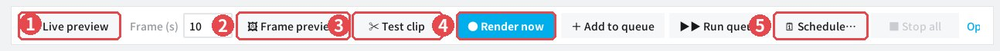
The window
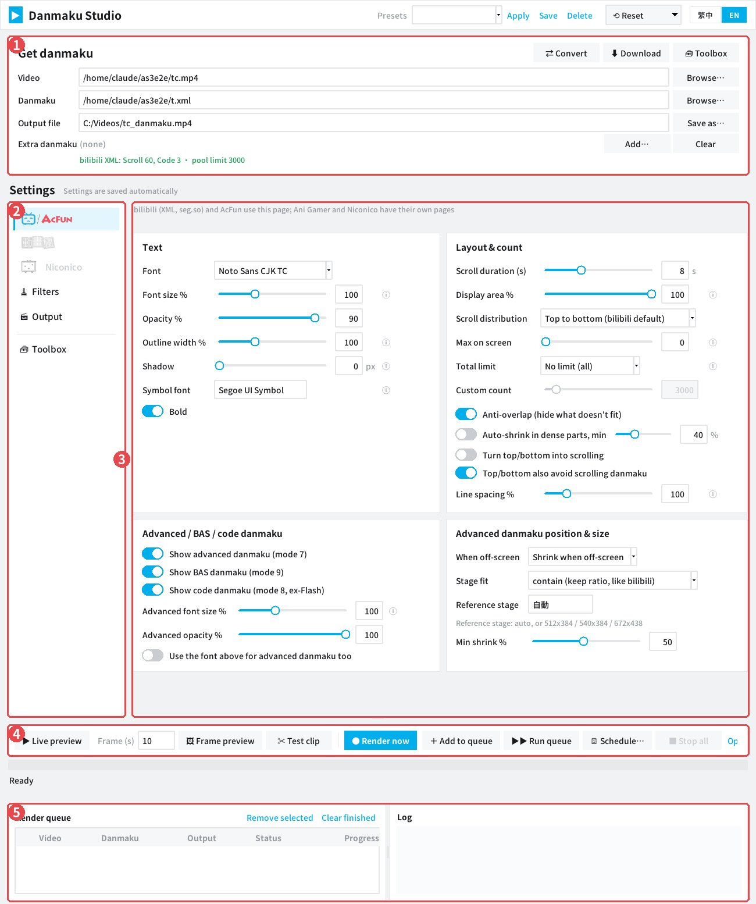
- Title bar: click ▶ at the top left for version info; Presets, ⟲ Reset and the 繁中 / EN switch are on the right.
- ① Get danmaku: video, danmaku, output and extra danmaku (merged); shortcuts to Convert, Download and Toolbox.
- ② Sidebar: bilibili / AcFun, Ani Gamer, Niconico, Filters, Output, Toolbox. Settings save automatically.
- ④ Action bar: live preview, frame preview, test clip, render now, add to queue, run queue, schedule, stop all, open output folder.
- ⑤ Queue and log: status, progress, live FPS, time left; the log explains every step and why danmaku were dropped.
- ⟲ Reset menu: clear file paths, clear login cookies, log out and delete login browser data, reset all settings.
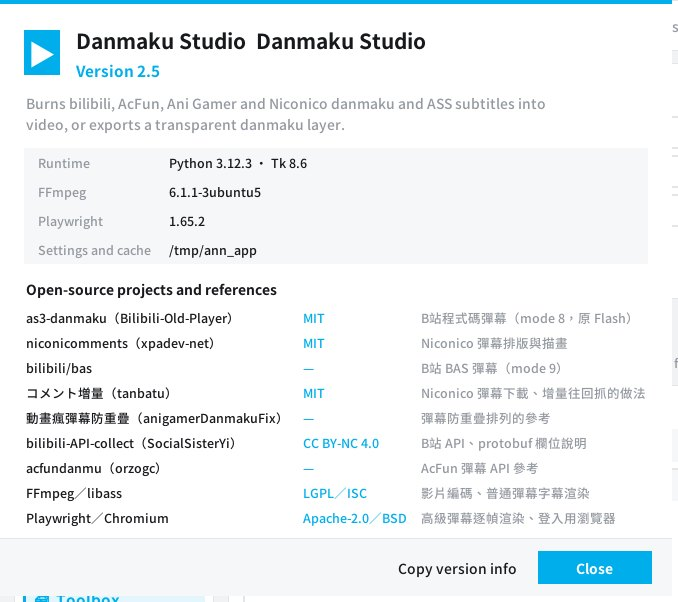
bilibili / AcFun page
- Used for bilibili XML, bilibili protobuf (seg.so) and AcFun danmaku.
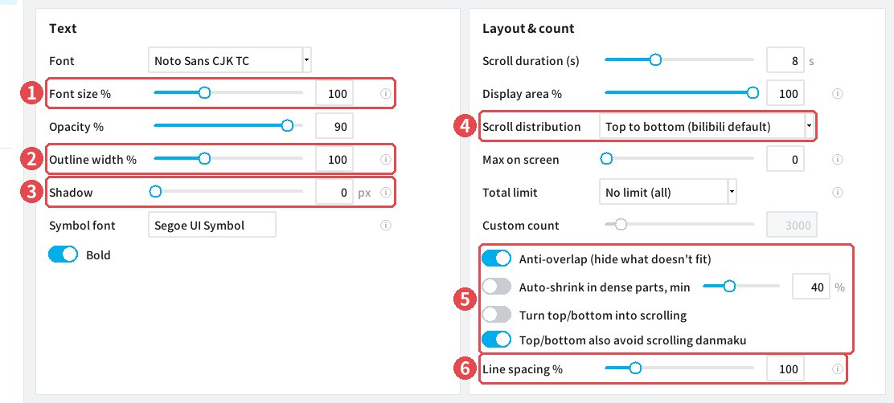
- ① Font size %: 100 = original size; 0 = hide normal danmaku.
- ② Outline width %: 100 = bilibili default (1/22 of the font size); 0 = none.
- ③ Shadow: pixels at 1080p, scaled with the video height.
- Symbol font: fills in symbols like ☢★♪ that show as boxes.
- Scroll duration and Display area % (50 = top half only).
- ④ Scroll distribution: top to bottom (bilibili default) or spread evenly.
- Max on screen and Total limit (no limit / pool limit in file / custom count).
- ⑤ Anti-overlap (hide what doesn't fit), Auto-shrink in dense parts, Turn top/bottom into scrolling, Top/bottom also avoid scrolling danmaku.
- ⑥ Line spacing % (50–300): 150–200 when few danmaku crowd the top; below 100 packs more rows.

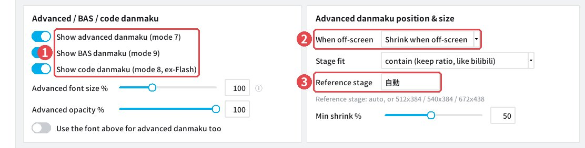
- ① Show or hide advanced (mode 7), BAS (mode 9) and code (mode 8) danmaku; advanced font size % and opacity %.
- ② When off-screen: shrink and move into view, with a minimum size.
- ③ Reference stage: Auto is recommended; 512x384, 540x384 and 672x438 are also available.
- How font sizes scale:
- bilibili / AcFun / Ani Gamer: size × 1.6 × (video height ÷ 1080) × font size %, so
size 25 = 40 px at 1080p. - Ani Gamer: files downloaded by this program use 18 / 25 / 36 (small / medium / large); the userscript always writes 25.
- bilibili advanced danmaku: original size × stage scale × advanced font size % (a 672×438 stage at 1080p is about ×2.47).
- Niconico: a 384 px tall stage with small / medium / large = 18 / 27 / 39 px, scaled to the video (about ×2.81 at 1080p).
- bilibili / AcFun / Ani Gamer: size × 1.6 × (video height ÷ 1080) × font size %, so
Ani Gamer page
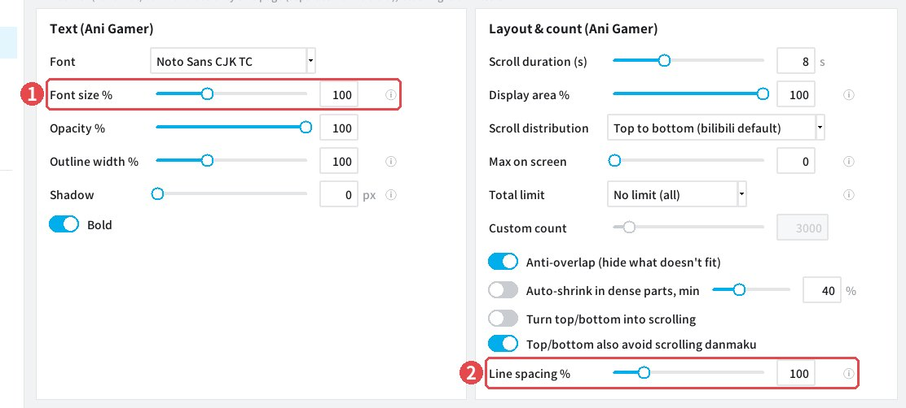
- Ani Gamer danmaku use only this page, separate from bilibili.
- Files record: time (to 0.1 s), position, colour and sender account.
- No send dates → Filters → cutoff doesn't apply, and the total limit samples evenly.
- The server returns at most about 3001 per episode.
Niconico page
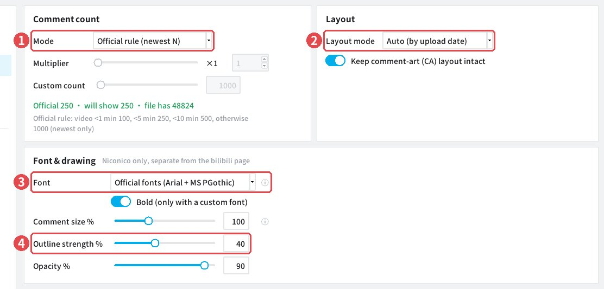
- Laid out with the open-source niconicomments library following the official player, so comment art (CA) stays intact.
- ① Comment count: official rule (videos under 1 min 100, under 5 min 250, under 10 min 500, otherwise 1000, newest only) / multiplier (official × N) / custom count / all.
- ② Layout mode: auto (by upload date) / HTML5 (new player) / Flash (old player).
- ③ Font: "Official fonts (Arial + MS PGothic)" by default; bold only applies to other fonts.
- ④ Outline strength %, comment size %, opacity %.
- Demo video: sm212213 "true my heart", about 40,000 comments.
Filters page
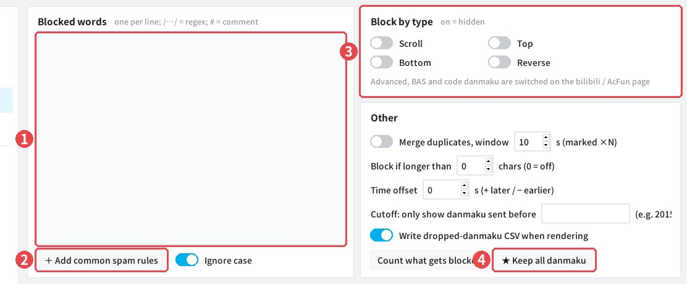
- ① Blocked words: one per line;
/…/is a regular expression; lines starting with#are comments. - ② Add common spam rules: punctuation only, one character repeated, short phrases repeated.
- ③ Block by type: scrolling, top, bottom, reverse.
- Merge duplicates (marked ×N), length limit, time offset, cutoff (only danmaku sent before a date).
Count what gets blockedshows the effect first; ④ Keep all danmaku turns off everything that drops danmaku.- A drop-list CSV can be written with every blocked danmaku and the reason.
Output page
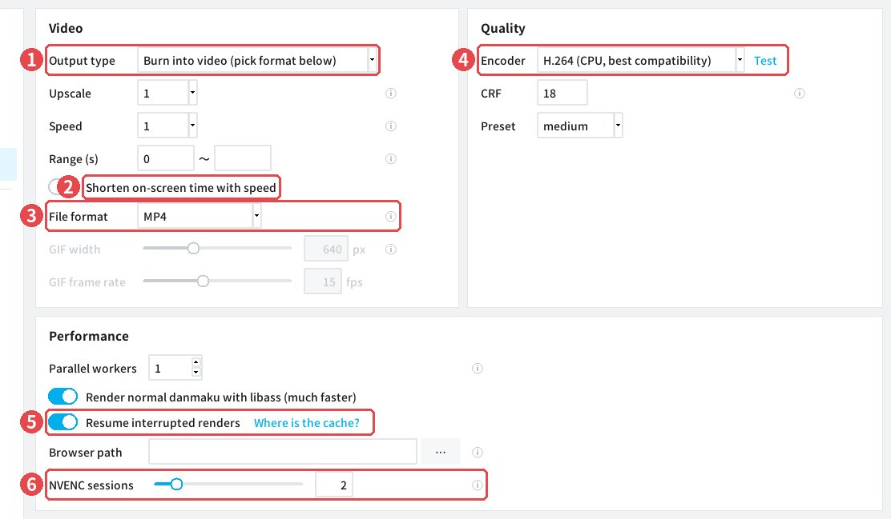
- ① Output type: burn into video, or a transparent layer (ProRes 4444 .mov, WebM VP9). File format is locked for transparent layers.
- Upscale: 2 for low-resolution videos.
- Speed: danmaku stay in sync with the video; ② also shortens how long they stay on screen.
- ③ File format: MP4, MKV, MOV, AVI, GIF. AVI holds H.264 only; GIF has no sound and is large, with adjustable width and frame rate.
- ④ Encoder: H.264 / H.265 on CPU or NVENC;
Testexplains why one isn't available. - CRF: lower is sharper; 18 is visually lossless. Parallel workers: about half your CPU cores.
- ⑤ Resume interrupted renders: segments are kept in
C:\Users\you\.danmaku_studio\work\and survive a restart;Where is the cache?opens it. - ⑥ NVENC sessions: 1–2 on 2 GB cards like the GTX 1050.
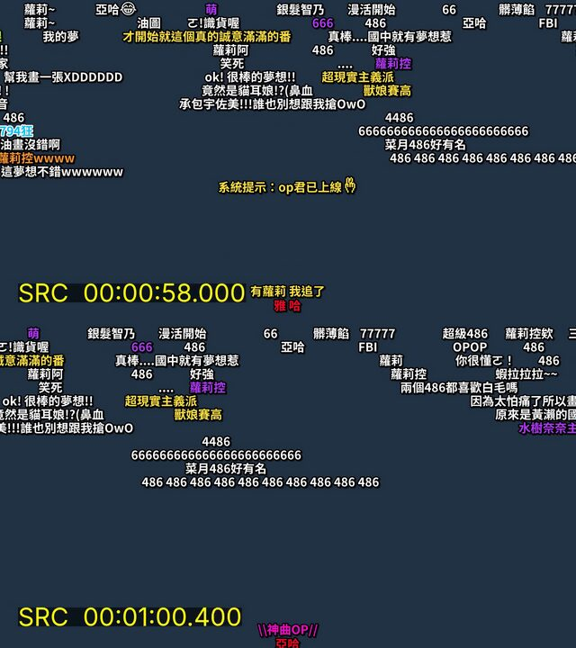
Preview and test clips
- Live preview: plays in the browser with a bilibili-style control bar (speed, ±5 s, volume, fullscreen, danmaku on/off, opacity), a density curve on the timeline, and the danmaku count and FPS.
- ASS preview: plays in ffplay; the shortcuts are in the window title.
- Frame preview: one moment, ±1 / ±5 s buttons,
Save as…PNG or JPG. - Test clip: renders the chosen seconds with all current settings as MP4 or GIF; play it or save it. Only the range and format come from the test dialog.
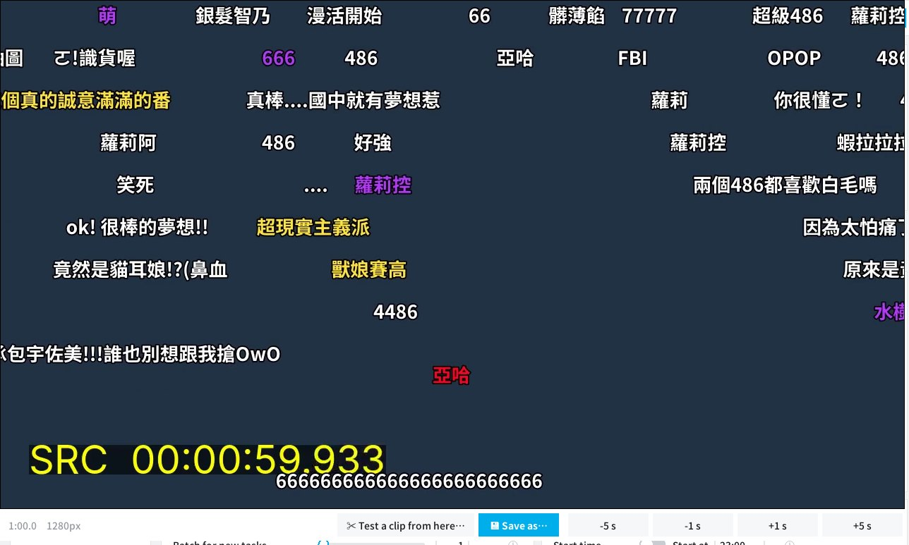
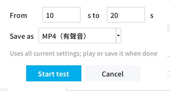
Download danmaku
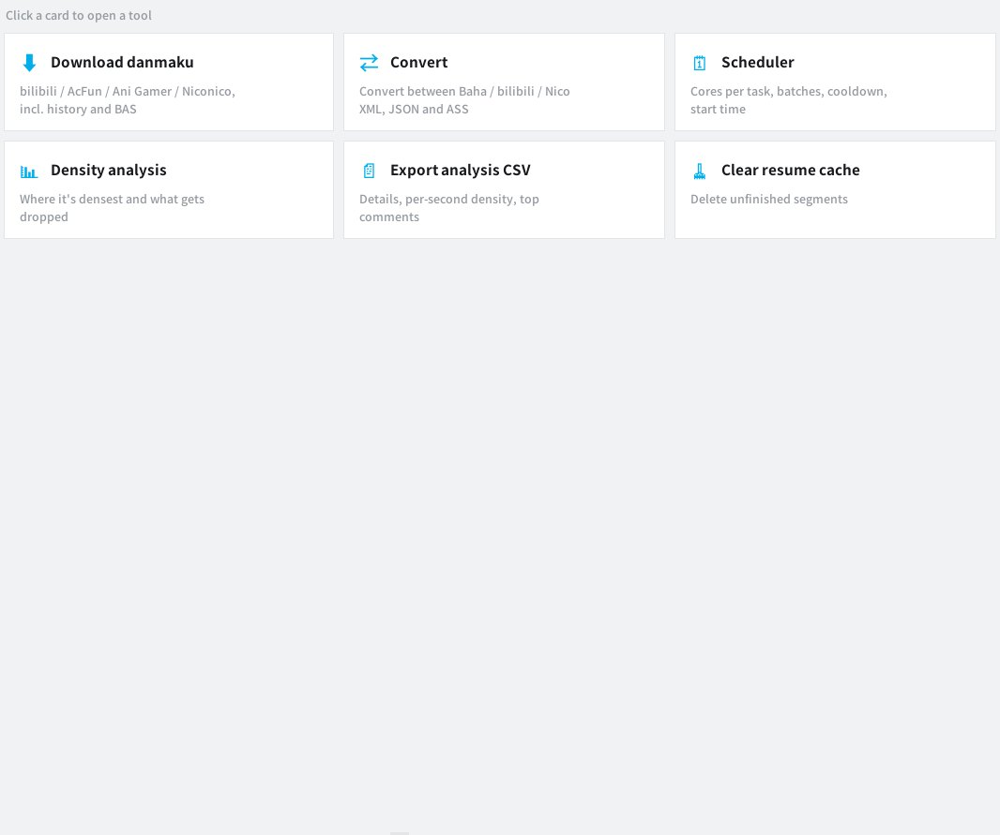
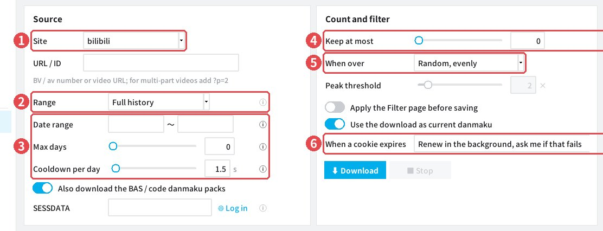
- Paste a URL or ID; the site is detected, or choose it in ① Site.
- bilibili: BV / av number or URL (add
?p=2for parts). ② Range: current pool or full history (every day merged); full history and BAS / code packs need SESSDATA.- ③ History can be limited by date range and max days, with a cooldown per day; a failure keeps what was fetched.
- AcFun: ac number or URL; no login.
- Ani Gamer: sn number or URL, up to about 3001; logging in may give more.
- ④ Keep at most (shared by all sites) + ⑤ When over: random evenly, or flatten peaks only; the Filters page can be applied before saving; Niconico uploader comments don't count.
- ⑥ When a cookie expires: see Login and cookies.
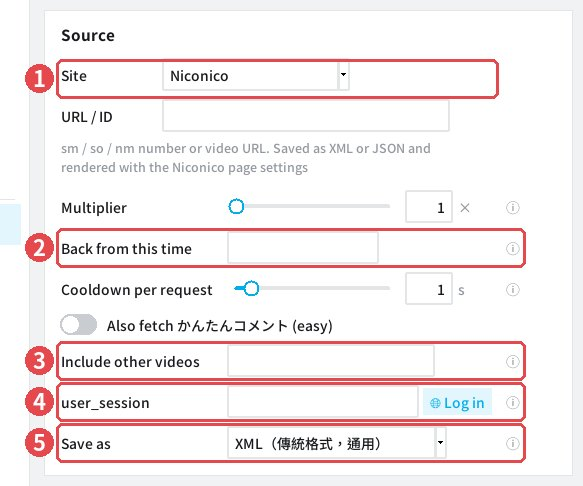
- Niconico (testing): sm / so / nm number or URL.
- ① Same approach as コメント増量: when logged in, each thread is fetched backwards N times, up to 1000 each.
- ② where to start going back; ③ add comments from other videos (e.g.
sm9×2); optionally include かんたんコメント. - On 429 (too many requests) it waits and slows down; ⑤ saves XML or JSON.
Convert
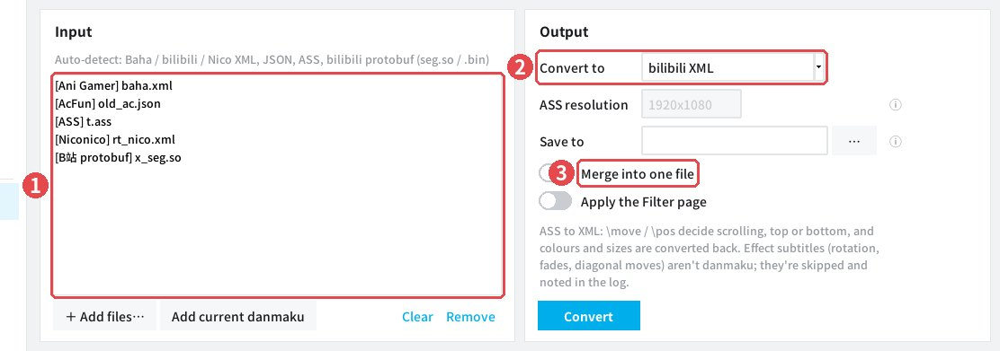
- Reads: Ani Gamer / bilibili / Niconico XML, JSON (AcFun old and new, Ani Gamer, Niconico, this program's format), ASS, bilibili protobuf (seg.so / .bin).
- Writes: bilibili XML, Ani Gamer XML, Niconico XML, JSON (testing), ASS.
- ASS to XML:
\move/\posdecide scrolling, top or bottom; effect subtitles (rotation, fades, diagonal moves) are skipped and logged. - To ASS: fonts and layout come from the settings pages; enter the resolution (e.g.
1920x1080). - ③ Merging combines content only; each file can't get its own time offset.
- "Apply the Filter page" removes unwanted danmaku while converting.
Scheduler
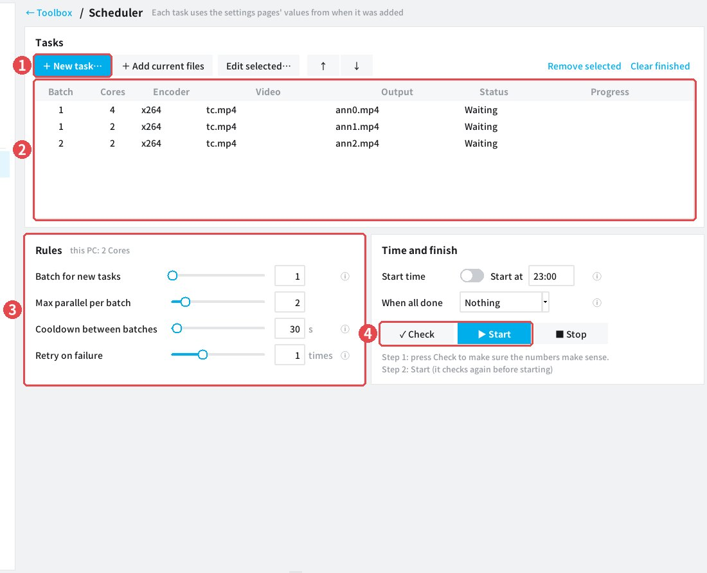
- ① Add tasks:
＋ New task…to choose files, cores, batch and encoder, or add the current files. Other settings come from the settings pages at that moment. - ③ Rules: max parallel per batch, cooldown between batches, retry on failure, start time, sleep or shut down when done (60 s to cancel with
shutdown /a). - ④ Check: checks numbers and files only (missing files, clashing outputs, too many cores, too many NVENC sessions).
- ④ Start: checks again first and won't start with errors; each batch waits for the previous one plus the cooldown.
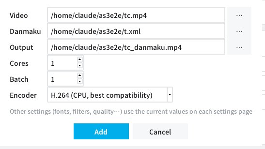
Login and cookies
🌐 Log in(testing): log in once in the program's own browser and the cookie is filled in; no more F12 copying.- That browser is separate from your normal Chrome; its logins are kept in
.danmaku_studio\browser_login. Remove them with ⟲ Reset → Log out and delete login browser data. - The cookies themselves stay in memory and aren't written to the settings file.
- Never share SESSDATA, user_session or BAHARUNE with anyone or any third-party site!
- When a cookie expires (download page):
- Renew in the background, ask me if that fails (default)
- Open the browser so I can log in again
- Ask me every time (log in / paste / stop)
- Ask me to paste a new one
- Stop and save what was fetched
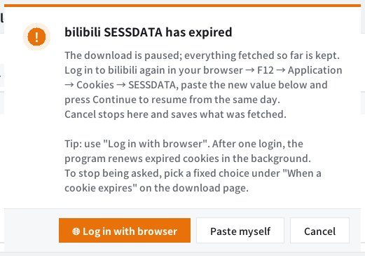
FAQ
- NVENC doesn't work? Output → Encoder → Test shows why. GTX 10 series: driver 570–580 with FFmpeg 8.0 or older, NVENC sessions 1–2. If it can't be used, the CPU takes over automatically.
- Niconico keeps returning 429? Cooldown 3–5 s, a smaller multiplier over several runs, don't run コメント増量 at the same time, and wait 10–30 minutes.
- All style pages locked with ASS? ASS fonts and sizes are fixed in the file; edit it in Aegisub.
- "Unknown danmaku format"? It's treated as bilibili danmaku and may load nothing or look wrong; test first, or convert it to bilibili XML.
- Full history still overlaps? Tens of thousands can't all fit: anti-overlap, auto-shrink, smaller line spacing or a total limit.
- Everything at the top? Line spacing 150–200, or spread evenly.
- seg.so "corrupted"? The file was saved as text and can't be recovered; download it again with Toolbox → Download.
- Cache taking space? It's in
.danmaku_studio\work\and deleted when a render finishes; clear leftovers with Toolbox → Clear resume cache. - Known issues:
- Niconico download, browser login and NVENC aren't fully tested on real systems yet; please post logs on GitHub.
- AcFun's own advanced danmaku format (mode 7) is skipped.
- JSON output is still being tested.
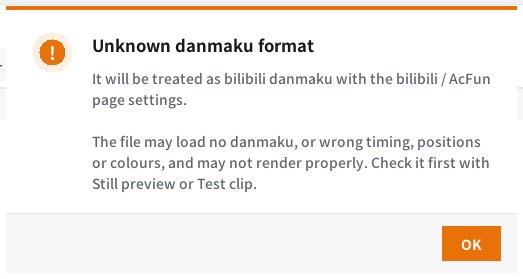
Version history
- 2.5 preview <2026-11-16>
- Fixed: pages that don't apply are now locked and greyed; the window is named "Danmaku Studio" and ▶ shows version info; NVENC failures explain why.
- New: toolbox, sliders, new dialogs; outline, shadow, line spacing, font size 0; speed-scaled on-screen time; MP4 / MKV / MOV / AVI / GIF; save frames, test clips; four-site download (Niconico in testing, bilibili date range, shared limit with peak flattening); browser login and cookie expiry handling; format conversion; scheduler.
- 2.0 <2026-11-15>
- Code danmaku (mode 8) via as3-danmaku; bilibili protobuf (seg.so, BAS .bin) with detection of files corrupted by saving as text.
- Downloads from bilibili (normal, packs, full history), AcFun and Ani Gamer.
- New anti-overlap based on the Ani Gamer anti-overlap userscript; scrolling and top/bottom avoid each other.
- BAS ghosting fix, lower memory in live preview, even sampling for files without send times.
- New UI: switches, 繁中 / EN, two-part layout, source icons, reset menu; bilibili-style live preview controls.
- 1.0 <2026-11-14>
- First version: browser rendering plus FFmpeg overlay for bilibili XML (advanced and BAS), Niconico XML and ASS; hybrid rendering, multi-core, resume, blocking and categories.
1.0is no longer supported; use 2.0 or later.
Links
- ☑ GitHub Releases — downloads
- ☑ The author's bilibili article (Chinese)
- ☑ niconicomments <MIT> — Niconico layout
- ☑ as3-danmaku (Bilibili-Old-Player) <MIT> — code danmaku, mode 8
- ☑ BAS — bilibili BAS danmaku, mode 9
- ☑ コメント増量 <MIT> — Niconico download approach
- ☑ danmu2ass — XML to ASS size reference
- ☑ Ani Gamer anti-overlap userscript (anigamerDanmakuFix) — layout
- ☑ acfundanmu — AcFun danmaku API
- ☑ bilibili-API-collect — bilibili API and protobuf fields
- ☑ Fetching comments from the new Niconico (Japanese) — Niconico API
- ☑ FFmpeg / libass, Playwright / Chromium — encoding, subtitles, browser capture
- 🔺 Made by the author with AI. Report mistakes on GitHub; you're free to modify the code.